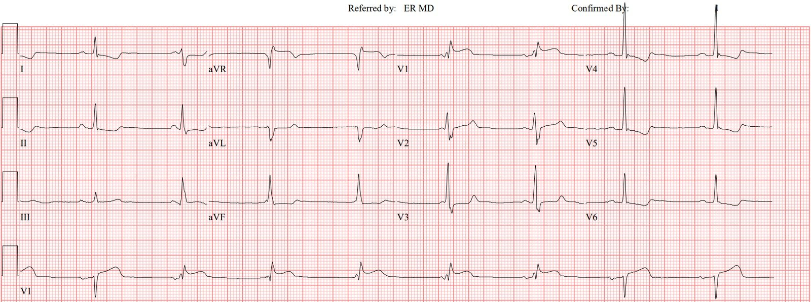
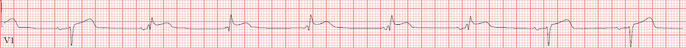
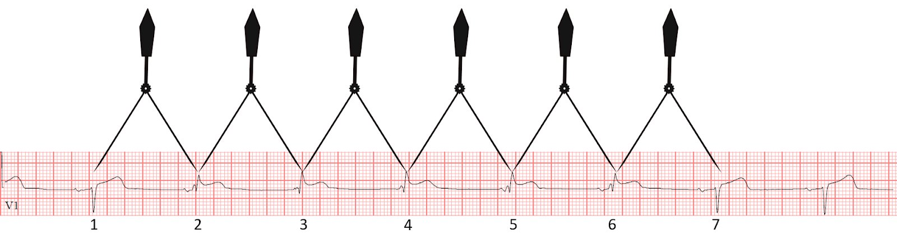
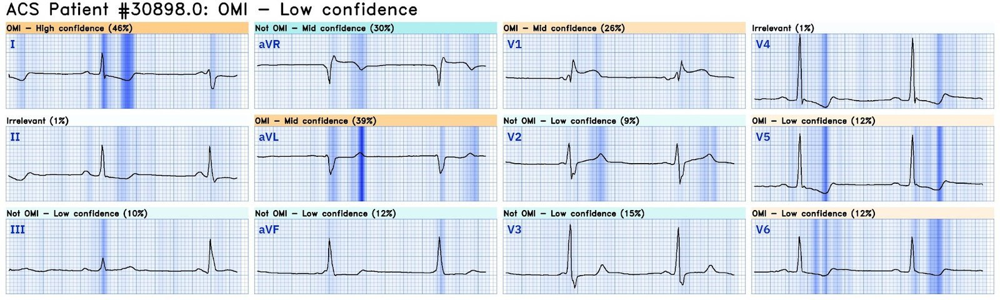
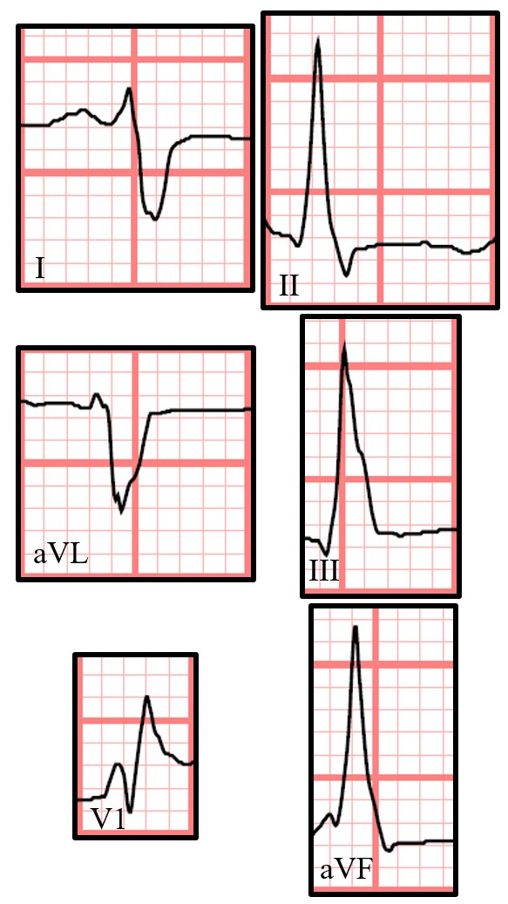
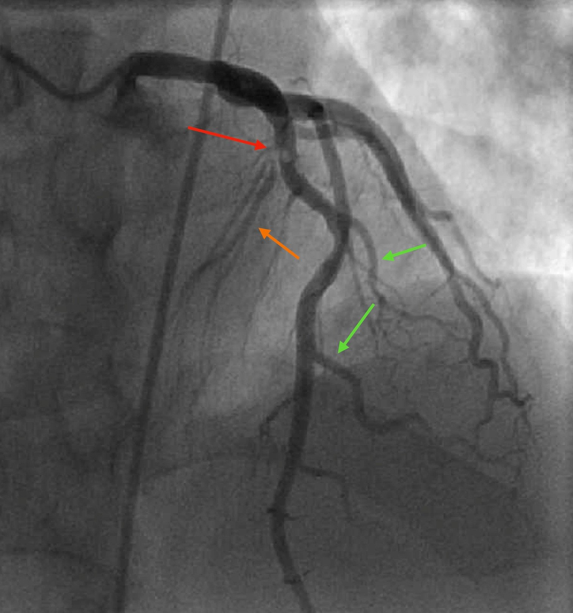
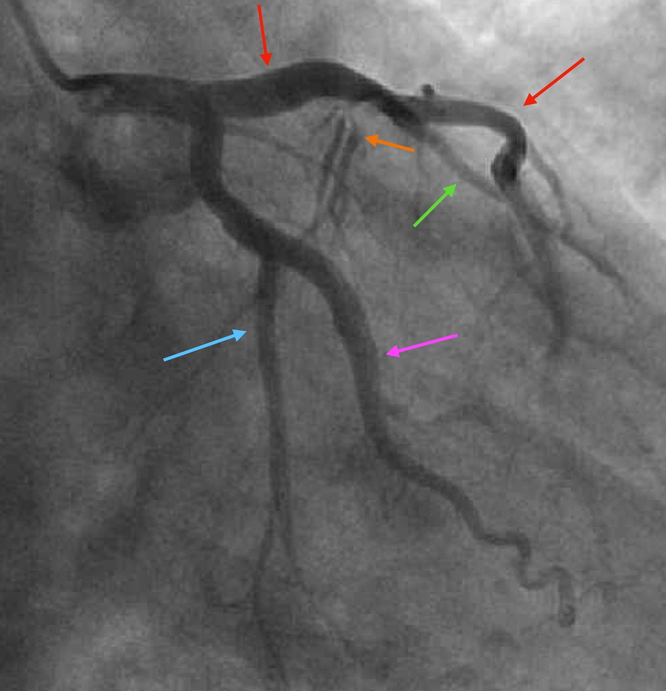
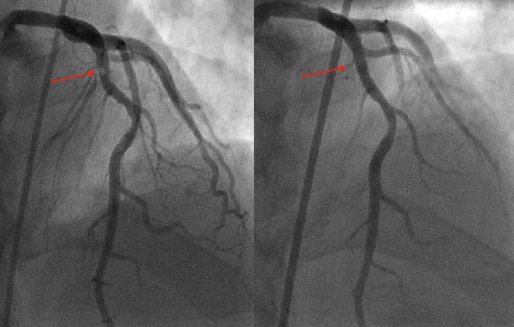
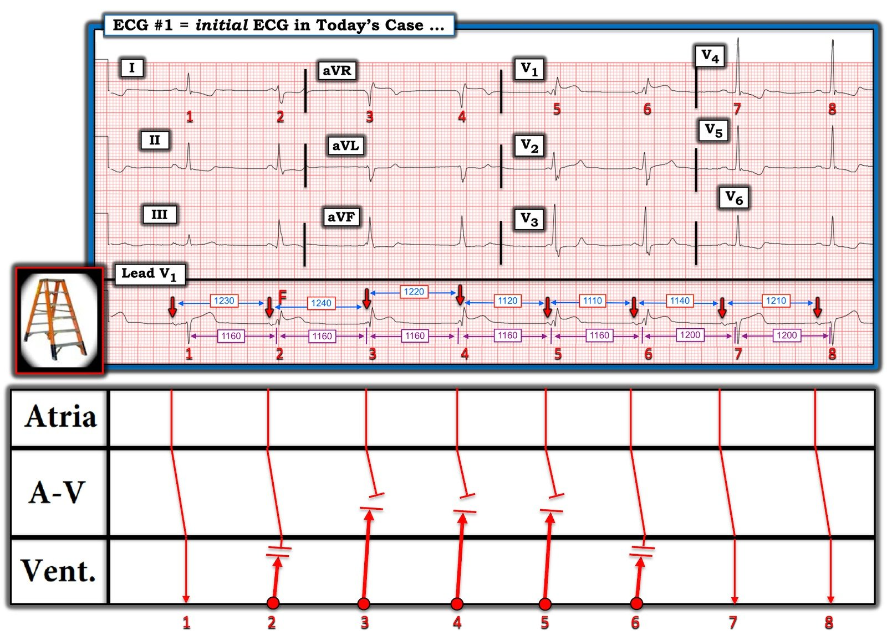

22/03/2024 — Một người ngoài 50 tuổi đau ngực. Có OMI không? Và đây là nhịp gì?
Bản dịch tiếng Việt của bài "A 50-something with chest pain. Is there OMI? And what is the rhythm?" – Dr. Smith’s ECG Blog. Giữ nguyên toàn bộ 11 hình ảnh và 3 video của bản gốc.
Tác giả: Willy Frick
Một người đàn ông ngoài 50 tuổi, tiền sử tăng huyết áp, rối loạn lipid máu và hút thuốc lá 30 gói-năm, đến phòng cấp cứu vì đau ngực dữ dội khởi phát đột ngột kèm vã mồ hôi đã 1 giờ. Điện tâm đồ của ông như sau:


Bạn nghĩ gì?
Bệnh sử cho đến lúc này rất gợi ý OMI, vì vậy chúng ta phải xem xét điện tâm đồ thật kỹ để xem có thể khẳng định điều này hay không. Nhìn vào dải nhịp, ta thấy có nhiều điều đang diễn ra hơn là một nhịp xoang đơn thuần, và thực tế có hai hình dạng phức bộ QRS khác nhau. Hãy xem kỹ hơn riêng phần nhịp và thử tự tìm ra điều gì đang xảy ra trước khi cuộn xuống tiếp.


Nếu ta đặt compa đo (calipers) lên các sóng R và đánh số chúng, ta thấy rằng mặc dù khoảng PR ngắn dần và sóng P biến mất bên dưới sóng R, sóng R vẫn tiếp tục xuất hiện với các khoảng rất đều đặn. Tức là, cho đến sóng R thứ 7, sóng này đến sớm hơn một chút so với dự kiến.


Tôi sẽ để phần bàn luận chi tiết hơn về nhịp cho Dr. Ken Grauer lừng danh ở bên dưới, nhưng việc dùng compa đo như trên cho thấy kết quả đọc nhịp là: Nhịp chậm xoang với một nhịp cạnh tranh (nhiều khả năng nhất là nhịp bộ nối). Việc các sóng R từ 2 đến 6 là nhát bộ nối khiến việc đánh giá thiếu máu cục bộ khó khăn hơn — nhưng không phải là không thể. Queen of Hearts không quan tâm đến phân tích nhịp, cô ấy chỉ đơn giản nhìn vào điện tâm đồ và quyết định liệu nó có biểu hiện OMI hay không.
Đây là phán quyết của Queen và phần giải thích của cô ấy:


Cô ấy nhận thấy OMI nhưng với độ tin cậy thấp. Tôi đã gửi bản ghi này cho Dr. Smith mà không kèm bối cảnh gì và ông nói “Rất có thể là một OMI vách.” Ông chỉ ra dấu hiệu xoáy trước tim (precordial swirl sign). Ông cũng chỉ ra rằng có phân ly đồng nhịp (isorhythmic dissociation) (xem chi tiết của Ken Grauer bên dưới) Xin nhắc lại, xoáy trước tim xảy ra khi LAD bị tắc tại hoặc ở đoạn gần so với các nhánh xuyên vách chính, gây thiếu máu cục bộ vách đáng kể. Điều này kéo vectơ ST chênh lên sang phải, dẫn đến ST chênh lên rõ nhất ở các chuyển đạo trước tim bên phải, kèm ST chênh xuống soi gương ở các chuyển đạo trước tim bên trái.
____________________
Bình luận của Smith:
Xem một ví dụ hay về RBBB kèm OMI vách tại đây:
Chest Pain and RBBB. What do you think? (Đau ngực và RBBB. Bạn nghĩ gì?)
Đây là thêm các ví dụ về OMI vách và ít nhất một trường hợp giả (Mimic):
A 50-something with cocaine chest pain and ST Elevation in V1 – V3 (Một người ngoài 50 tuổi đau ngực do cocaine và ST chênh lên ở V1 – V3)
_______________________
Bàn thêm về cách hiểu hình dạng của các phức bộ thoát:
Thời gian QRS rất gần 120 ms, gợi ý ổ thoát có thể nằm thấp trong vùng bộ nối, thậm chí có thể nằm trong hệ His-Purkinje (mặc dù tần số hơi nhanh đối với nhịp thoát thất). Xem xét hình dạng có thể cho chúng ta thêm thông tin về nguồn gốc của nhịp thoát. Tôi trình bày các sóng R đại diện từ một số chuyển đạo bên dưới.


Bước 1 là xem xét hình dạng blốc nhánh phải hay blốc nhánh trái, điều này phụ thuộc vào chuyển đạo I và V1. Hãy nhớ rằng chúng ta phải giới hạn việc xem xét vào các phức bộ QRS có hình dạng của nhát thoát (tức là R2 đến R6). Điều đó chỉ còn lại R2 ở chuyển đạo I, có phần cuối âm, phù hợp với khử cực hướng sang phải (vì chuyển đạo I định hướng từ phải sang trái). Chuyển đạo V1 có phần cuối dương, cũng phù hợp với khử cực hướng sang phải (vì V1 định hướng về phía khoang liên sườn thứ tư bên phải). Điều này phù hợp với hình dạng RBBB, gợi ý xung động khởi phát ở gần nhánh trái hơn. (Điều này nghe có vẻ khó hiểu, nhưng nếu xung động khởi phát gần nhánh trái, thì nhánh phải ắt phải được hoạt hóa muộn hơn. Đây chính xác là trình tự hoạt hóa giống như bạn sẽ thấy trong trường hợp blốc nhánh phải.)
Bước 2 là xem xét hình dạng phân nhánh, điều này phụ thuộc vào các chuyển đạo chi. Ta thấy trục lệch phải rõ với phức bộ rS ở I và aVL, và phức bộ qR ở II, III và aVF. (Nói một cách chặt chẽ, không thấy sóng Q ở aVF nhưng đó là do sóng P bị vùi lấp. Vì II và III có sóng Q, aVF cũng phải có.) Đây là hình dạng blốc phân nhánh trái sau (left posterior fascicular block), gợi ý nguồn gốc từ phân nhánh trái trước. (Đây cũng là lập luận giống như trên, khi hình dạng blốc nhánh phải dự báo nguồn gốc từ nhánh trái.)
Quay lại việc đánh giá thiếu máu cục bộ:
Quay lại với điện tâm đồ, các chuyển đạo đập vào mắt tôi đầu tiên là — I, II, V4, V5, V6. Nhát đầu tiên ở chuyển đạo I và II, và cả hai nhát ở V4-6 là các nhát xoang, và tất cả đều có sóng T dạng xuống-lên (down-up) trông có vẻ thiếu máu cục bộ. Ta cũng thấy aVL (chỉ có các phức bộ thoát) có ST chênh xuống kín đáo, đồng hướng một cách không phù hợp với phức bộ QRS chủ yếu âm của nó. Đây là điện tâm đồ một lần nữa:
Giờ đây khi ta thấy nhiều vùng có vẻ là thay đổi soi gương (reciprocal), nhiệm vụ cuối cùng là tìm vectơ tổn thương nguyên phát. Nhìn vào V1, có hình dạng blốc nhánh phải, có ST chênh lên (STE) đồng hướng, điều này hoàn toàn phù hợp. Do xoáy trước tim mà Dr. Smith đã đề cập, ST chênh xuống (STD) ở các chuyển đạo bên là soi gương với STE ở V1. Và vì xoáy là dấu hiệu của OMI LAD, không có gì ngạc nhiên khi có ST chênh xuống soi gương ở thành dưới tại II.
May mắn thay, bác sĩ cấp cứu đánh giá bệnh nhân đã kích hoạt phòng thông tim (cath lab) ngay lập tức. (Ca này được ghi nhận là STEMI trong hồ sơ lâm sàng và trong báo cáo thông tim, nhưng chắc chắn không đáp ứng tiêu chuẩn STEMI và do đó theo định nghĩa là NSTEMI. Vì mục đích sổ đăng ký quốc gia, ca này sẽ bị phân loại sai là STEMI.)
Phim chụp mạch đầu tiên bên dưới là tư thế AP chếch đầu (cranial), tốt cho việc quan sát LAD và các nhánh chéo.
(Bấm chuột phải vào video và chọn “Loop” để video lặp lại liên tục.)
Bên dưới tôi trình bày một ảnh tĩnh với các mũi tên chỉ LAD, các nhánh xuyên vách, và một vài nhánh chéo. Tại đầu mũi tên đỏ, bạn có thể thấy một hình khuyết thuốc tròn, biểu hiện huyết khối và có vẻ liên quan đến chỗ xuất phát của các nhánh xuyên vách (do đó có dấu hiệu xoáy).


Phim chụp mạch tiếp theo là tư thế RAO (chếch trước phải) chếch chân (caudal), tốt nhất cho việc quan sát LCx và các nhánh của nó, tức các nhánh bờ tù. Trong ca này, phim cũng cho thấy rõ hơn tình trạng tắc gần hoàn toàn của nhánh xuyên vách.
Bên dưới tôi trình bày một ảnh tĩnh với các mũi tên chỉ LAD, các nhánh xuyên vách, một nhánh chéo, LCx, và OM. Huyết khối ở LAD không được thấy rõ trong tư thế này, nhưng mũi tên màu cam chỉ vào chỗ xuất phát của các nhánh xuyên vách, gần như có vẻ không nối với LAD do bị tắc gần hoàn toàn.


Và cuối cùng, sau khi đặt stent vào LAD:
Trước và sau:


(Đáng tiếc là việc này đã dẫn đến tình trạng “nhốt” (jailing) các nhánh vách phía sau stent và có lẽ một mức độ dịch chuyển mảng xơ vữa (plaque shift), đó là lý do chúng không ngấm thuốc cản quang tốt trên phim “sau”. Đây là cái giá của việc ngăn ngừa nhồi máu thành trước.)
Mặc dù bệnh nhân đến viện rất sớm (cTnI lúc nhập viện không phát hiện được) và được tái tưới máu, bệnh nhân vẫn có cTnI đỉnh 48.4 ng/mL (tham chiếu < 0.049).
Smith: đây là mức troponin đỉnh rất cao. Phần lớn STEMI có cTnI đỉnh lớn hơn 10.0. STEMI diện rộng vào khoảng 30-80.
Tuy vậy, thành trước của ông đã được cứu và ông có phân suất tống máu bình thường, không bị suy tim.
Những điểm cần học:
- Xoáy trước tim (precordial swirl) có thể gặp trong tắc LAD đoạn gần có liên quan đến các nhánh xuyên vách, và bạn có thể bỏ sót nếu chỉ trông chờ vào ST chênh lên rõ ràng ở thành trước.
- Thiếu máu cục bộ có thể bị che lấp bởi một nhịp thoát QRS rộng, điều này làm giảm độ nhạy của điện tâm đồ.
- Nhịp thoát có hình dạng blốc nhánh phải cho thấy nguồn gốc từ nhánh trái, và hình dạng blốc nhánh trái cho thấy nguồn gốc từ nhánh phải.

===================================
BÌNH LUẬN CỦA TÔI, bởi KEN GRAUER, MD (22/3/2024):
===================================
Một phần bàn luận xuất sắc và đầy khai sáng về ca hôm nay của Dr. Willy Frick! Phần trình bày phim thông tim độc đáo của anh đã xóa tan mọi nghi ngờ về giải phẫu — với hình minh họa rõ ràng nhất về tắc cấp nhánh xuyên vách mà tôi từng thấy!
- Tôi luôn thấy đặc biệt mãn nguyện khi giải phẫu được bộc lộ qua kết quả thông tim kịp thời khớp với dự đoán của chúng ta từ điện tâm đồ ban đầu (tức là ấn tượng tức thì đến kỳ lạ của Dr. Smith rằng: “Điện tâm đồ này rất có thể biểu hiện một nhồi máu vách — xét theo dấu hiệu Xoáy trước tim (Precordial Swirl Sign)).
Tôi tập trung bình luận vào 2 khía cạnh của ca hôm nay: i) Đưa ra một góc nhìn khác về một số dấu hiệu trên điện tâm đồ ban đầu; — và, ii) Giản đồ bậc thang (laddergram) và phần giải thích “đào sâu” về nhịp ban đầu.
===================================
Để bổ sung cho phần mô tả của Dr. Frick về Xoáy trước tim (trích từ phần Bình luận của tôi ở cuối trang trong bài ngày 15 tháng Mười năm 2022 của Dr. Smith’s ECG Blog):
- Trong bối cảnh tắc LAD (thường ở đoạn gần so với nhánh xuyên vách thứ 1) ở vị trí rất gần — dẫn đến thiếu máu cục bộ vách (cũng như tổn thương thành trước và mỏm) — điện tâm đồ sẽ cho thấy ST chênh lên ở chuyển đạo V1 và aVR — và ST chênh xuống soi gương ở chuyển đạo V5 và V6. Đây chính xác là những gì ta thấy ở Hình 1, trong đó tôi đã tái hiện và đánh dấu bản ghi ban đầu.
- ĐIỂM THEN CHỐT (PEARL): Mặc dù việc đánh giá thay đổi ST-T ở chuyển đạo V1 đối với nhát #5 và 6 trở nên khó hơn (do hình dạng RBBB của nhát #5,6 ở chuyển đạo V1) — dải nhịp chuyển đạo dài ở Hình 1 được ghi từ chuyển đạo V1 — và các sóng P có mũi tên ĐỎ với khoảng PR bình thường đứng trước phức bộ QRS hẹp và trông bình thường của nhát #1,7,8 cho thấy sóng ST-T ở các nhát dẫn truyền từ xoang trông như thế nào!
- Mặc dù sóng T dương kèm ST chênh lên rõ ràng là bất thường đối với hình dạng RBBB của nhát #5 và 6 mà ta thấy ở chuyển đạo V1 — không thể có nghi ngờ gì rằng đoạn khởi đầu ST thẳng đuỗn, tối cấp của các nhát dẫn truyền từ xoang #1,7,8 ở chuyển đạo V1 dải dài biểu hiện (cùng với ST chênh lên ở chuyển đạo aVR) — một hình ảnh khu trú còn thuyết phục hơn nữa của OMI vách cấp!
- Một ĐIỂM THEN CHỐT khác để nhận ra Xoáy trước tim — là nhận thấy hình ảnh sóng ST-T ngược nhau như soi gương ở chuyển đạo V1 và V6 (mà không phải do LVH). Chẳng phải DỄ DÀNG sao khi nhận ra hình ảnh sóng ST-T soi gương đối xứng giữa chuyển đạo V1 và chuyển đạo V6 bằng cách tập trung vào các nhát dẫn truyền từ xoang #7 và 8 ở chuyển đạo V6 so với 2 nhát cuối cùng (ngay bên dưới chuyển đạo V6) trên dải nhịp chuyển đạo V1 dài!


===================================
Tôi nhận thấy nhịp trên bản ghi ban đầu của ca hôm nay đóng vai trò như một “rương kho báu” chứa các khái niệm loạn nhịp nâng cao dành cho những độc giả yêu thích việc giải mã các nhịp phức tạp.
- LƯU Ý: Với những độc giả chỉ muốn “Những điều cơ bản” — Biết rằng có nhịp chậm xoang với hình dạng ST-T bất thường rõ ràng ở cả nhát rộng lẫn nhát hẹp, phù hợp với OMI cấp đã được chứng minh trên thông tim — là tất cả những gì cần thiết để xử trí lâm sàng phù hợp.
- NHƯNG — Dành cho những người Yêu thích Loạn nhịp: BẠN có sẵn sàng cho thử thách nhận diện những đặc điểm thú vị có trong bản ghi ban đầu này không?
===================================
Ở Hình 1 — tôi đã đánh dấu dải nhịp chuyển đạo V1 dài bằng các mũi tên, số đo các khoảng — và giản đồ bậc thang tôi đề xuất.
- Mũi tên ĐỎ làm nổi bật nhịp xoang khá đều (nhưng không hoàn toàn đều), phù hợp với nhịp chậm xoang và loạn nhịp xoang (do khoảng P-P không đều như vậy — và tần số nhĩ chung dưới 60/phút).
- Như Dr. Frick đã nhận xét — có 2 hình dạng QRS chính, và đó là lý do nhịp này hấp dẫn đến vậy. Dù vậy — Chúng ta biết rằng các nhát #1,7,8 đều là nhát dẫn truyền từ xoang — vì mỗi nhát này đều đi sau cùng một khoảng PR bình thường (0.18 giây) — và mỗi nhát này đều có hình dạng rS hẹp, trông bình thường, đúng như mong đợi ở chuyển đạo V1.
- Tuy nhiên — Không sóng P mũi tên ĐỎ nào khác trên bản ghi này cho thấy dẫn truyền xoang bình thường (Ngay cả các sóng P đi trước nhát #2 và #6 cũng không — vì khoảng PR đi trước 2 nhát này rõ ràng ngắn hơn 0.18 giây, là mức mà các nhát dẫn truyền từ xoang #1,7,8 cho ta biết là cần thiết để có dẫn truyền AV bình thường).
- Thay vào đó — Các nhát #3,4,5 đều có vẻ xuất phát từ một ổ tạo nhịp nào đó ở tầng thấp hơn — vì QRS của các nhát #3,4,5 rõ ràng rộng hơn QRS của các nhát dẫn truyền thuần túy từ xoang #1,7,8 — và — khoảng R-R đi trước các nhát #3,4,5 giống hệt nhau ( = 1160 ms.).
- Điểm MẤU CHỐT: 2 ý trên cho ta biết có phân ly nhĩ thất thoáng qua — vì mặc dù có các sóng P xoang đúng lúc (tức là các mũi tên ĐỎ đều đặn trong Hình 1) — các sóng P gần các nhát #3,4,5 rõ ràng không được dẫn truyền.
- Điểm Tinh tế-nhưng-Quan trọng: Mặc dù khoảng PR đi trước các nhát #2 và 6 ngắn hơn khoảng PR 0.18 giây cần cho dẫn truyền xoang bình thường — khoảng PR này vẫn đủ dài để cho phép các sóng P xoang này thâm nhập một phần xuống tâm thất. Và, sóng R của các nhát #2 và #6 không cao bằng sóng R của các nhát #3,4,5. Vì vậy tôi cho rằng nhát #2 (và có lẽ cả nhát #6) là các nhát hỗn hợp (fusion beat)! (Tôi đã đánh dấu nhát #2 bằng chữ “F”).
- ĐIỂM THEN CHỐT (PEARL): Tầm quan trọng lâm sàng của việc nhận ra các nhát hỗn hợp — là điều này chứng minh rằng một thành phần của phức bộ QRS mà ta thấy ở các nhát #2 và 6 xuất phát không phải từ nút AV (vốn là một cấu trúc trên thất) — mà từ tâm thất (tức là, Hiện tượng hỗn hợp QRS không xảy ra do khử cực đồng thời của nhát xoang và nhát từ nút AV). BẤM VÀO ĐÂY — để xem thêm về các nhát hỗn hợp.
- Việc các nhát #2 và 6 một phần có nguồn gốc từ thất, và xuất phát từ cùng ổ tạo nhịp thoát ở tầng thấp như các nhát #3,4,5 — được củng cố bởi hình dạng QRS tương tự và khoảng R-R đi trước giống hệt nhau của 5 nhát này (tức là, Mỗi nhát trong 5 nhát này đều đi sau một khoảng R-R 1160 ms.).
- Dr. Frick đã đề cập tới nơi nhiều khả năng phát sinh các nhát thoát thất #2,3,4,5 và 6. Các phức bộ QRS này rộng hơn bình thường, nhưng không quá rộng — và chúng có hình dạng RBBB (như thấy ở các nhát #5 và 6 tại chuyển đạo V1) và hình dạng LPHB (như thấy qua phức bộ rS với sóng S rất sâu ở chuyển đạo I — và sóng R chiếm ưu thế ở các chuyển đạo II,III) — điều này xác định các nhát thoát thất này xuất phát từ một vị trí trong các phân nhánh.
- ĐIỂM THEN CHỐT (PEARL): Cách đơn giản của tôi để suy ra phân nhánh nào trong 3 phân nhánh (nhánh phải mảnh = RBB — và phân nhánh trái trước và phân nhánh trái sau = LAH và LPH) là vị trí của ổ thoát — là: vị trí đó chính là phân nhánh nào trong 3 phân nhánh không được gợi ý trên điện tâm đồ.
- Nói đơn giản — Vì các nhát thoát trong Hình 1 có hình dạng RBBB/LPHB — vị trí thoát thất phải nằm ở LAH ( = phân nhánh trái trước — Left Anterior Hemifascicle).
- Xin nhấn mạnh: Nhát phân nhánh là các nhát thất — thường không rộng bằng các dạng nhịp thoát thất khác không xuất phát từ một phần của hệ dẫn truyền. Với khoảng R-R = 1160 ms giữa mỗi nhát thoát phân nhánh trong Hình 1 — tần số của nhịp thoát này (tức là, hơi nhanh hơn 50/phút) — có lẽ hơi gia tốc so với tần số thoát thất điển hình (thường trong khoảng 20-40/phút) — gợi ý rằng Nhịp Phân nhánh mà ta thấy trên bản ghi hôm nay có thể phù hợp với một dạng AIVR (nhịp tự thất gia tốc — Accelerated IdioVentricular Rhythm) — vốn thường xuất hiện như một rối loạn nhịp “tái tưới máu” sau OMI cấp (Để biết thêm về AIVR — Xem Bình luận của tôi ở cuối trang trong bài ngày 8 tháng Tư năm 2022 của Dr. Smith’s ECG Blog).
Cuối cùng — tôi luôn muốn cố gắng xác định TẠI SAO một nhịp thoát lại xuất hiện. Nhìn vào các khoảng mà tôi đã đo cẩn thận trong Hình 1:
- Tần số xoang chậm hơn ở đầu dải nhịp chuyển đạo V1 dài (tức là, các khoảng P-P 1230, 1240 và 1220 ms của 3 nhát đầu tiên trên bản ghi này). Điều này rõ ràng tạo ra một “khoảng trống” để nhịp phân nhánh hơi gia tốc xuất hiện (tức là, các khoảng R-R 1160 ms đi trước mỗi nhát phân nhánh — cho thấy tần số của nhịp thoát nhanh hơn so với nhịp chậm xoang).
- Điều này thay đổi về cuối dải nhịp chuyển đạo dài, khi khoảng P-P giảm xuống dưới khoảng R-R 1160 ms của nhịp thoát sau nhát #4 — cho phép xoang “bắt được” (capture) ở 2 nhát cuối cùng trên bản ghi.
- LƯU Ý: Dù vậy — tần số của nhịp chậm xoang lại chậm đi một lần nữa sau nhát #7 (khoảng P-P = 1210 ms) — vì vậy tôi sẽ dự đoán nhịp thoát phân nhánh quay trở lại NẾU việc theo dõi được tiếp tục sau nhát #8.
- Một nhận xét cuối cùng — các khoảng dao động với thời gian P-P và R-R gần tương đương nhau giữa nhát xoang và nhát thoát phân nhánh ở một số đoạn của bản ghi hôm nay gợi nhớ đến thực thể được gọi là phân ly nhĩ thất đồng nhịp (isorhythmic AV dissociation) — trong đó cách các khoảng P-P và R-R này thay đổi không phải lúc nào cũng đúng như sách giáo khoa — điều này có thể giải thích phần nào khó khăn trong việc dự đoán khi nào nhịp phân nhánh xuất hiện trên bản ghi hôm nay (Để biết thêm về phân ly nhĩ thất đồng nhịp — Xin xem Bình luận của tôi ở cuối trang trong bài ngày 24 tháng Năm năm 2020 trên Dr. Smith’s ECG Blog).